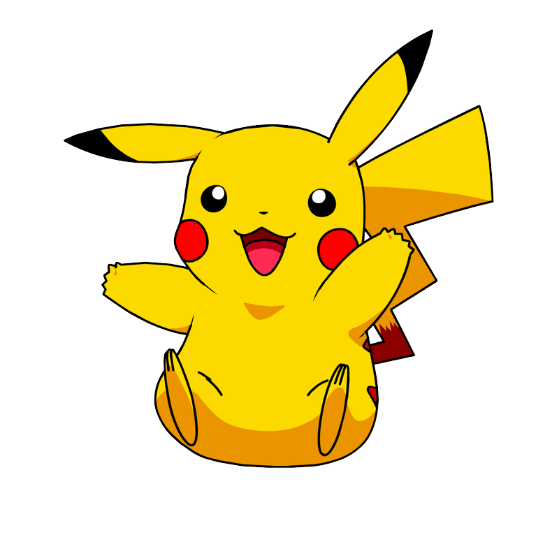

Sobre mim
Profissional autônomo com mais de 17 anos de experiência na área comercial, possuo vivência de gestor, domínio de ferramentas do pacote office, windows, linux e problemas de hardware. Respiro tecnologia, busco constantemente novas habilidades em desenvolvimento de software. Atuo tanto no front-end como no back-end, estudo diariamente para me tornar cada vez melhor e escrever códigos de qualidade..
Principais Projetos

Previsão do Tempo
Projeto prático de um sistema de previsão do tempo com a API do openweathermap.org.
Ver Projeto
Jogo da Memória
Este projeto teve a proposta de exercitar as skills adquiridas durante as formações de HTML e CSS Developer. Atividade em um formato diferente, unindo conhecimento e diversão! =)
Ver Projeto
Coffee Shop
Coffee shop desenvolvido utilizando a ferramenta Bootstrap durante a formação do BootCamp de Css na DIO.
Ver Projeto
INdecor Design
Landing page desenvolvida durante as aulas introdutórias sobre a responsividade em múltiplos dispositivos. Utilizei Html e Css puro.
Ver Projeto
Zap Pizza
Neste projeto de pizzaria utilizei boas práticas e uso do html Semântico com boas práticas e exercitei padronizações de fonte e cores em um projeto.
Ver ProjetoABC viagens
Este é um projeto real idealizado por mim, e a empresa teve 08 anos de operações. Foi desenvolvido em formato template. Basicamente foi onde começou meu interesse por desenvolvimento.
Ver Projeto

Multiverso
Projeto pessoal de nível avançado e em andamento do Multiverso do Spiderman. Tecnologias abordadas Html, css e JavaScript.
Ver Projeto

Lista Pokedex
Este projeto foi desenvolvido durante a Formação de JavaScript Developer da DIO, utilizei a #pokeAPI, Html, Css e muito JavaScript.
Ver ProjetoBateria Virtual
Este projeto WEB prático de JavaScript foi desenvolvido para testar múltiplas possibilidades de interações com o usuário através do teclado.
Ver Projeto
Menu Mario Kart
Este projeto de JavaScript foi desenvolvido com o intuíto de unir conhecimento e diversão, escolhi um tema nostálgico (exclusivamente para estudo).
Ver Projeto
Site de Casamento
Este projeto tem um propósito especial, eternizar as informações e detalhes de meu casamento que acontecerá 06/01/24 - estou utilizando as tecnologias html, css e JavaScript.
Ver ProjetoEsta é a versão final do site da Beratech que será utilizado para apresentar meus serviços de suporte e dar acesso ao portfólio de projetos.
Ver Projeto
Teste de Memória
projeto prático de javaScript aonde pude explorar múltiplas alterações com o usuário a nível iniciante.
Ver Projeto
Loja de Jogos
Projeto prático de responsividade e animações. Tecnologias utilizadas html, css e javaScript.
Ver ProjetoAgência Imovi
Site da agência Imovi desenvolvido utilizando o framework BootStrap, html css e javaScript.
Ver ProjetoCalculadora IMC
Calculadora de IMC responsiva desenvolvida utilizando html css e javaScript.
Ver ProjetoBuffet Porco no Rolete
Projeto Real - em fase final de desenvolvimento para o cliente. Utilizei a ferramente BootStrap e um pouco de Php nos formulários de contato.
Ver Projeto